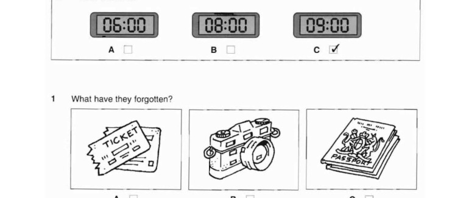
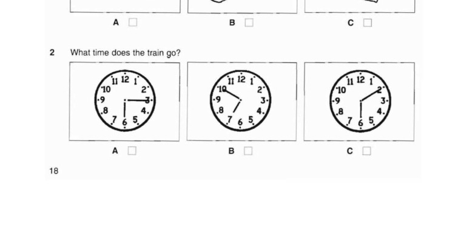
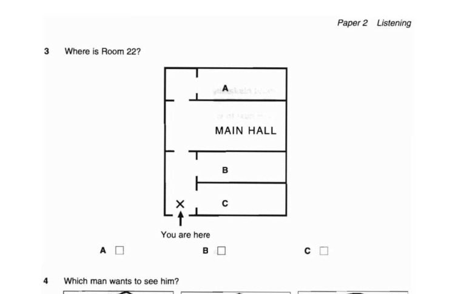
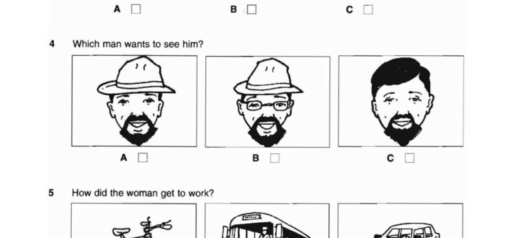
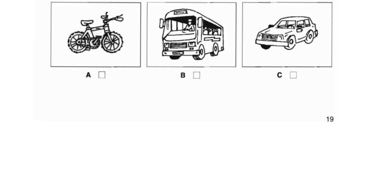

Listening Test 1
Complete all 25 questions. Explanations remain hidden until you submit the test.
Part 1 — Questions 1–5
Choose A, B or C.
1. What have they forgotten?

Male: I've got the passports here. Female: And the tickets are in my bag. Male: What about the camera? Female: Oh no! I've left it at home. And I really wanted to take some holiday photos.
“I've left it at home.” — “it” refers to the camera.
Camera mới là đồ vật bị bỏ quên, nên chọn B.
A (tickets): tickets are in her bag, nên không bị quên. C (passports): the man says he has the passports with him.
2. What time does the train go?

Male: Hurry up! We'll be late. Female: What time does the train go? Male: At six fifteen. We've got to leave in ten minutes. Female: I'm nearly ready.
“At six fifteen.”
Tàu chạy lúc 6:15, tương ứng với hình A.
Thông tin “leave in ten minutes” nói về thời điểm họ phải rời đi, không phải giờ tàu chạy.
3. Where is Room 22?

Male: Can you tell me the way to Room 22? Female: Go straight down here and it's the second door on the right. Male: Do I have to go through the main hall? Female: No, it's the door on the right, just before you get to the main hall.
“the second door on the right” + “just before you get to the main hall.”
Room 22 nằm bên phải và trước Main Hall, nên vị trí đúng là B.
A nằm sau/qua Main Hall nên sai. C không phù hợp với mô tả “second door on the right”.
4. Which man wants to see him?

Male: Which man wants to see me? Female: The one over there, wearing a hat. Male: The one with the glasses? Female: No, not him. The other one.
Người đàn ông đội mũ nhưng không đeo kính.
A là người đội mũ không đeo kính.
B có kính và bị phủ định bằng “No, not him.” C không đội mũ.
5. How did the woman get to work?

Female: Oh, the traffic's terrible today. Male: Yes, it took me forty minutes by bus. Female: Well, I drove and it took me an hour! Male: An hour! It's probably quicker by bicycle.
“I drove and it took me an hour!”
Người phụ nữ đi làm bằng ô tô, nên chọn C.
B (bus) là phương tiện của người đàn ông. A (bicycle) chỉ là gợi ý về phương tiện có thể nhanh hơn.
Part 2 — Questions 6–10
Listen to Paul talking about his family. Match each person with a job A–H.
6. Bill
Female: How old is Bill? Paul: He's nineteen. He's studying French in Paris at the moment.
“He's studying French in Paris at the moment.”
Bill đang học, nên nghề/trạng thái tương ứng là F — student.
Không chọn writer: writer là Sally trong ví dụ. Các nghề khác không được gắn với Bill.
7. David
Female: And David? What does he do? Paul: Oh, he's a teacher, the same as my mother was.
“he's a teacher”
David là giáo viên → G.
Doctor là bố của Paul. “my mother was” nói mẹ Paul từng là giáo viên, không phải đáp án cho David.
8. Paul's mother
Paul: Oh, he's a teacher, the same as my mother was. But she finished working last year.
“she finished working last year.”
Mẹ của Paul đã nghỉ làm → E — stopped work.
G (teacher) là nghề trước đây của bà; câu hỏi cần trạng thái hiện tại.
9. Paul's father
Female: And what about your father? Paul: Oh, he's a doctor at the local hospital.
“he's a doctor at the local hospital.”
Bố Paul là bác sĩ → B.
Farmer chỉ xuất hiện như mong muốn sống ở nông thôn/farm trong tương lai, không phải nghề hiện tại.
10. Paul
Female: Are you a doctor too, Paul? Paul: I'm not clever enough! I work in a bank — the one in the High Street, next to the bookshop.
“I work in a bank.”
Paul làm việc ở ngân hàng → A — bank clerk.
B (doctor) bị Paul phủ định ngay: “I'm not clever enough!”
Part 3 — Questions 11–15
Choose A, B or C.
11. When is the football match?
Mary: Fine. What shall we do in the afternoon? Eric: There's a good football match on — Carlos'll like that.
“in the afternoon” + “There's a good football match on.”
Trận bóng diễn ra chiều thứ Bảy → B.
Saturday morning dành cho shopping/museum. Sunday afternoon liên quan đến kế hoạch sau bữa trưa.
12. Where are they going to eat on Saturday evening?
Mary: OK. Do you want to eat at home in the evening? Eric: What about going to a restaurant? We haven't been to that Italian one for months. Mary: Or we could try that new Chinese one. Eric: OK. Let's do that.
“that new Chinese one” + “OK. Let's do that.”
Họ quyết định ăn ở nhà hàng Trung Quốc → C.
A (at home) bị thay bằng ý đi nhà hàng. B (Italian restaurant) được nhắc tới nhưng không phải lựa chọn cuối cùng.
13. What are they going to do on Sunday morning?
Eric: Now, what about Sunday? Mary: If we get up early on Sunday, we could go for a drive in the countryside.
“we could go for a drive in the countryside.”
Sáng Chủ nhật họ dự định đi lái xe ở vùng quê → A.
B “get up late” trái với “get up early”. C cinema là đề xuất sau bữa trưa và sau đó không thực hiện được.
14. Where are they going to have lunch on Sunday?
Eric: Yes, and we could have lunch in a pub somewhere. Mary: Yes, the one near the river's nice.
“have lunch in a pub”
Họ sẽ ăn trưa ở pub → B.
Không có quyết định ăn ở café hoặc ở nhà.
15. They can't go to the cinema on Sunday afternoon because
Mary: Shall we go to the cinema after lunch? Eric: We can't. His train's at four o'clock and I'll have to take him back to the station.
“We can't. His train's at four o'clock...”
Họ không đủ thời gian để đi xem phim vì phải đưa Carlos ra ga → C.
Không có thông tin Carlos hoặc Eric không thích phim.
Part 4 — Questions 16–20
Complete the phone message. Capital letters are not required. Question 16 requires correct spelling.
To: Martin
Elaine: Yes, please. My name's Elaine. Male: How do you spell that? Elaine: E-L-A-I-N-E.
Tên được đánh vần trực tiếp: E-L-A-I-N-E.
Điền Elaine. Theo đáp án chính thức, câu này yêu cầu spelling chính xác.
Không dùng tên Martin: Martin là người nhận tin nhắn.
Elaine: Tell Martin that the party tonight is at the Grand Hotel. I'll meet him there. Male: Does he know the address? Elaine: Oh yes. Everyone knows the Grand Hotel.
“the party tonight is at the Grand Hotel.”
Địa điểm bữa tiệc là Grand Hotel.
Không cần địa chỉ đường phố; audio chỉ yêu cầu tên địa điểm.
Elaine: And tell him I'll try to be there at half past eight. But I may be a bit late. Male: ... I'll tell him eight thirty.
“half past eight” = 8:30 p.m. = 20:30.
Các dạng 8.30 p.m., 8:30, 20.30 hoặc half past eight đều thể hiện cùng thời gian.
“may be a bit late” không thay đổi thời gian hẹn được ghi trong tin nhắn.
Elaine: Oh, yes ... ask him to bring a friend. Male: A friend? Oh good, that could be me.
“ask him to bring a friend.”
Martin được yêu cầu mang theo một người bạn → friend.
Không phải tên của người đàn ông; đáp án cần vật/người cần mang theo trong mục Please bring.
Male: Has he got your phone number? Elaine: It's 724 5936. Male: Right, I've got that.
“It's 724 5936.”
Số điện thoại cần điền là 724 5936.
785 3126 ở đầu cuộc gọi là số điện thoại mà Elaine vừa gọi tới, không phải số của Elaine.
Part 5 — Questions 21–25
Complete the information about the South Seas Travel Agency.
New phone number: 847 2296
Answerphone: Our new address is 98 Warnock Road, that's W-A-R-N-O-C-K.
Tên đường được nói và đánh vần trực tiếp: Warnock.
Điền Warnock. Theo đáp án chính thức, spelling phải chính xác.
98 đã có sẵn trong đề; chỉ cần tên đường.
Answerphone: It's easy to find — it's near the park, at the end of the road, opposite the bank.
“opposite the bank.”
Văn phòng mới đối diện ngân hàng → bank.
“park” chỉ là mốc gần đó, không phải địa điểm đối diện.
Answerphone: We will be open for business at our new office on 21st May.
“on 21st May.”
Ngày mở cửa là 21st May.
Không nhầm với ngày gọi điện hay ngày chuyển địa điểm; audio nêu rõ ngày mở cửa.
Answerphone: We have a present for anyone who spends £350 or more on a holiday.
“spends £350 or more on a holiday.”
Mức tiền là £350 hoặc hơn. Vì dấu £ đã có sẵn trong form, học sinh có thể điền 350.
Không có mức giá khác trong đoạn này.
Answerphone: If your holiday costs £350, we will give you a travel bag absolutely free.
“give you a travel bag absolutely free.”
Quà tặng miễn phí là travel bag. Đáp án chính thức cũng chấp nhận bag.
Không phải holiday hay plane journey; đó chỉ là ngữ cảnh sử dụng chiếc túi.